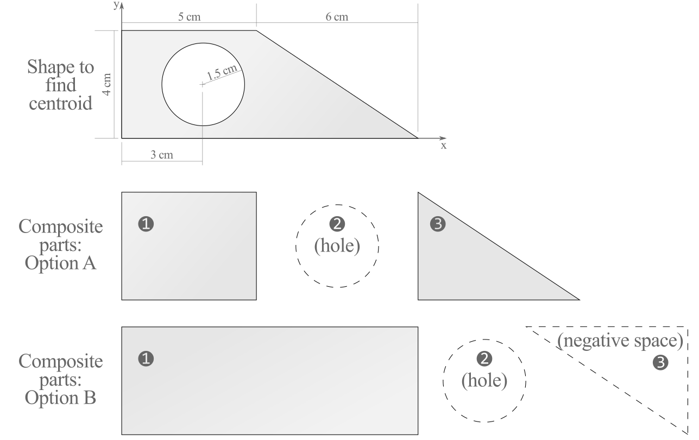

Section 7.5 Centroids using Composite Parts
Key Questions
- How do you calculate the center of gravity of a system of separate objects?
- Where do the equations for the shapes in areas and centroids table come from?
- When finding the centroid, what do you do with a cut-out area of a composite part?
- Does it matter whether a distance to the centroid of a part is positive or negative from the axis system?
In this section we will discuss how to find centroids of two-dimensional shapes by first dividing them into pieces with known properties, and then combining the pieces to find the centroid of the original shape. This method will work when the geometric properties of all the sub shapes are known or can be easily determined. If the shape can’t be decomposed this way, perhaps because it has a curved boundary, you will need to use integration to find the centroid. Integration will be covered in Section 7.7.
For convenience, the properties of several common shapes can be found in Table 7.4.2.
Subsection 7.5.1 Composite Parts Method
The equations we will use for this approach are
where,
\(\bar{x}\text{,}\) and \(\bar{y}\) are the coordinates of the centroid of the entire shape.
\(V_i\) is the area of composite part \(i\text{.}\)
\(\bar{x}_i\text{,}\) and \(\bar{y}_i\) are the coordinates of the centroid of composite part \(i\text{.}\)
The steps to finding a centroid using the composite parts method are:
- Break the overall shape into simpler parts.
- Collect the areas and centroid coordinates, and
- Apply (7.5.1) to combine to find the coordinates of the centroid of the original shape.
As a simple example, consider the L-shaped area shown, which has been divided into two rectangles. The areas of the rectangles are
The origin is located at the lower left, so the coordinates of the centroids of the two rectangles are
The centroid of the whole shape is found by applying (7.5.1)
For more complex shapes, the usual practice is to set up a table to organize the information needed to calculate the centroid, as we will now show. The process can be broken into three steps.
-
Break the overall shape into simpler parts.
We begin with a sketch of the shape and establish a coordinate system. It is critical that all measurements are made from a common origin, and the results will be measured from this origin as well. A careful choice of origin can simplify the problem, so give it some thought.
Then divide the shape into several simpler shapes. The sub-shapes may include holes, which are treated as negative areas. You must know how to calculate the area and locate the centroid of any sub-shape you use.
Consider the complex shape below.
There are often several ways to divide a shape, but it’s best to use as few parts as possible to minimize your computations and opportunities for error. For example, you could choose to break this shape into either
- a \(\cm{5} \times \cm{4}\) rectangle, a \(\cm{6} \times \cm{4}\) right triangle, and an \(r = \cm{1.5}\) circular hole, or
- a large \(\cm{10} \times \cm{4}\) rectangle, an \(r = \cm{1.5}\) circular hole, and a \(\cm{6} \times \cm{4}\) right triangle subtracted from the large rectangle.
Both options will give the same results, and in this case there is no particular advantage to one choice over the other. However, it would be silly and unnecessary to break this into more than three parts, and it would not be a good idea to divide this into a trapezoid minus a hole, unless you know geometric properties of a trapezoid — which are not available in Table 7.4.2. Be sure your sub shapes don’t overlap and don’t get counted more than once.
-
Collect the areas and centroid coordinates.
Once the complex shape has been divided into parts, the next step is to determine the area and centroidal coordinates for each part. You can use the properties in Table 7.4.2 for rectangles, triangles, circles, semi-circles and quarter circles but you will need to use integration if other shapes are involved. Any holes or removed shapes should be treated as negative areas.
Record the information you gather in a table like the one below. The table should include a row containing column headings and units, one row for each part, and a summary row. The first column identifies the part — by number or sketch, the second contains the areas, and the third and fourth contains the centroidal coordinates of the parts.
Part \(A_i\)
\([\text{cm}^2]\)\(\bar{x}_i\)
\([\text{cm}]\)\(\bar{y}_i\)
\([\text{cm}]\)\(A_i \bar{x}_i\)
\([\text{cm}^3]\)\(A_i \bar{y}_i\)
\([\text{cm}^3]\)1 20 2.5 2 50 40 2 12 7 4/3 84 16 3 \(-\)2.25 \(\pi\) \(3\) 2 -6.75 \(\pi\) -4.5\(\pi\) \(\Sigma\) 24.93 — — 112.8 41.86 The last two columns of the table contain the first moments of area \(Q_x = A_i \bar{y}_i\) and \(Q_y = A_i \bar{x}_i\text{,}\) and are easily filled in by multiplying the values in columns two to four. Be sure to attend to positive and negative signs when multiplying. Note that the moment of area with respect to the \(x\) axis uses the distance from the \(x\) axis, which is \(\bar{y}_i\text{,}\) and vice-versa.
The final row of the table are total values, calculated by summing the entries for \(A_i\text{,}\) \(Q_x\) and \(Q_y\text{,}\) so for example the total area of the shape is
\begin{equation*} A = \sum A_i = A_1 + A_2 + A_3 \dots \end{equation*}Don’t sum columns three or four, since \(\sum \bar{x}_i\) and \(\sum \bar{y}_i\) are meaningless.
-
Combine the pieces to find the overall centroid.
After you have filled in the whole table, you can find the coordinates of the centroid by applying (7.5.1) with the summary values from the last row.
\begin{align*} \bar{x} \amp = \frac{Q_y}{A} \amp = \frac{112.8}{24.93} \amp = \cm{4.52}\\ \bar{y} \amp = \frac{Q_x}{A} \amp = \frac{41.86}{24.93} \amp = \cm{1.692} \end{align*}Finally, plot the centroid \((\bar{x}, \bar{y})\) on the diagram. If you have made a calculation error it will usually be obvious, because the centroid location won't “feel right.”
Example 7.5.1. Interactive: Centroid of Trapezoid and Hole.
Example 7.5.3. Interactive: Centroid of Composite Rectangles.
This interactive shows a composite shape shape consisting of a large rectangle with a smaller rectangle subtracted. You can change the location and size of the rectangles by moving the red points.
Use this to visualize how the centroids of the whole is related to to the centroid of the parts. Note that for objects divided into two pieces, the centroid of the whole always falls on the line connecting the centroids of the parts.
Question 7.5.4.
Is is possible for the centroid of the whole shape to be between the centroids of the parts?
Try to find an example yourself.
https://www.geogebra.org/m/agqvxd3q
Question 7.5.6.
When finding a centroid, what will happen if you don't measure the centroids of the parts consistently from the same origin?
Your answer will be wrong!
Subsection 7.5.2 Centroids of 3D objects
Key Questions
- How do you divide a composite solid into parts and compute the volume/mass and centroidal distances of each part?
- What is the technique to compute the overall center of volume/mass for a composite solid?
The centroid of a three-dimensional volume is found similarly to two-dimensional centroids, but with volume used instead of area for the weighting factor. The centroid of a volume and the center of mass or gravity for a homogenous solid are identical.
Where,
\(\bar{x}\text{,}\) \(\bar{y}\text{,}\) and \(\bar{z}\) are the coordinates of the centroid of the overall volume. \(V_i\) is the volume of composite part \(i\text{.}\)
\(\bar{x}_i\text{,}\) \(\bar{y}_i\text{,}\) and \(\bar{y}_i\) is the coordinates of the centroid of composite part \(i\text{.}\)
Many three-dimensional shapes are just prismatic extrusions of the shapes. The volume of a prism is the product of the cross-sectional area and the length of the prism and is easily calculated. For example, the volume of a circular cylinder with radius \(r\) and length \(l\) is \(V=\pi\ r^2\ l\text{.}\)
If the density varies for each part of a composite solid, we can find the center of mass by dividing the first moment of mass by the total mass. You can also compute the center of gravity by replacing the mass terms in the equations below with weight terms.
Here \(m_i\) is the mass of composite part \(i\text{.}\)
You must always use the same weighting factor (area, volume, mass, weight, etc) in both the numerator and denominator of the center of area/volume/mass/weight equations.
Example 7.5.7. 3D Center of Mass.
A composite solid consists of a rectangular block of lightweight concrete and a triangular wedge of steel with dimensions as shown. The rectangular block has a \(\ft{2}\) radius circular hole drilled through its full depth, perpendicular to the front and back faces.
Assume \(\gamma_C = \pqf{125}\text{,}\) and \(\gamma_S = \pqf{493}\text{.}\)

Find the center of mass of this composite solid.
| Part | \(V_i\) \([\text{ft}^3]\) |
\(\gamma\) \([\text{lb/ft}^3]\) |
\(W_i\) \([\text{lb}]\) |
\(\bar{x}_i\) \([\text{ft}]\) |
\(\bar{y}_i\) \([\text{ft}]\) |
\(\bar{y}_i\) \([\text{ft}]\) |
\(W_i\ \bar{x}_i\) \([\text{lb-ft}]\) |
\(W_i\ \bar{y}_i\) \([\text{lb-ft}]\) |
\(W_i\ \bar{z}_i\) \([\text{lb-ft}]\) |
| block | 216 | 125 | 27000 | -3 | 2 | 4.5 | -81000 | 54000 | 121500 |
| hole | -50.27 | 125 | -6283 | -3 | 2 | 6 | 18850 | -12566 | -37699 |
| wedge | 12 | 493 | 5916 | -4.5 | 4.67 | 1 | -26622 | 27608 | 5916 |
| 26633 | -88772 | 69042 | 89717 |
We have actually found the coordinates of the center of gravity, but since \(g\) is constant they are also coordinates of the center of mass.